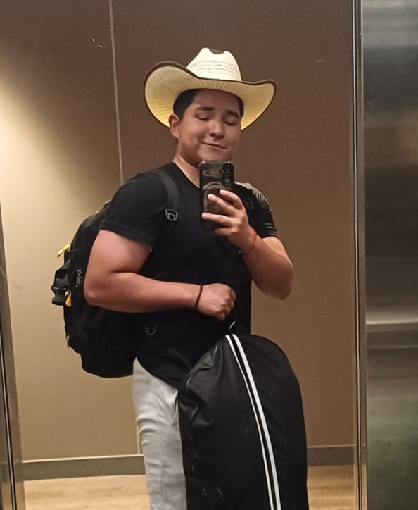

Home
About Me
I am a 22-year-old student from Peru with a deep passion for continuous learning and personal growth. When I am not focusing on programming or refining software projects, I divide my time between music, painting, and going to the gym. Additionally, I pursue a semi-professional career in Dota 2—a challenge I take on more as a personal goal and an athletic milestone than as a livelihood, pushing my strategic thinking and competitive drive to the limit.
Student photo
